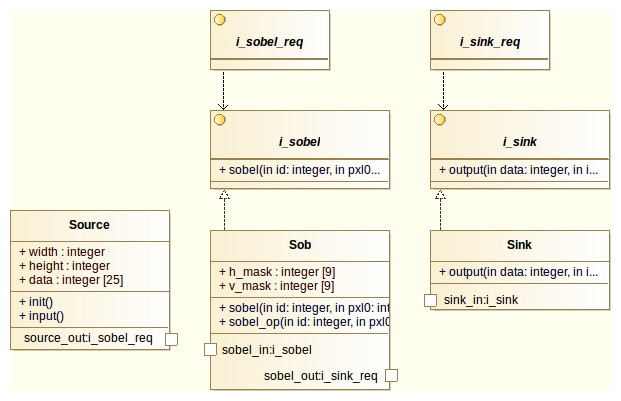
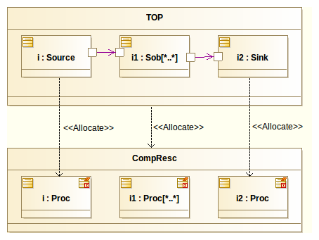
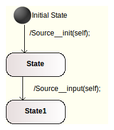
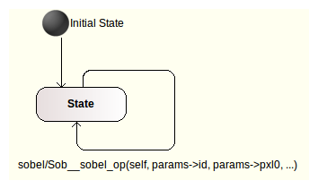
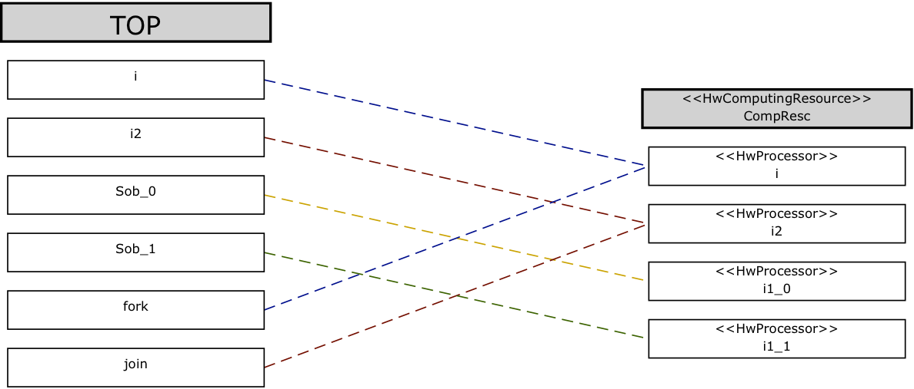
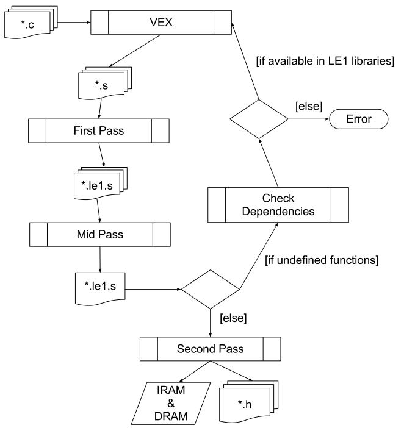

arch.pl
Script to modify the Architecture section of the UML model in XMI format using the wildcard notation,
HwProcessor
s are found and replicated.
Requires an XMI file, LE1 XML file and output file name.
Generates an XMI file with modified architecture section to match that which is defined in the LE1 XML file.
appl
_rr.pl
Script to modify the Application section of the UML model in XMI format using the wildcard multiplicity notation. Objects within the top level class are replicated along with the creation of surrounding structure to communicate with input and output objects. This method includes a fork object which passes subsequent calls to available replicated objects in a round robin manor and a join object which passes calls from multiple objects to a single output port.
Requires an XMI file, name of top level class and output file name.
Generates an XMI file with extended application section.
appl
_split.pl
Script to modify the Application section of the UML model in XMI format using the wildcard multiplicity notation. Objects within the top level class are replicated along with the creation of surrounding structure to communicate with input and output objects. This method includes a fork object which splits a data section over all available replicated objects and a fork object which waits for all forked jobs to complete before passing data to output port.
Requires an XMI file, name of top level class and output file name.
Generates an XMI file with extended application section.
alloc.pl
Script to calculate all possible static mappings based on the UML model input. Requires an XMI file, name of top level class, output file name and optionally a directory to generate images in. Generates an XML file containing permutations of all possible static mapping bases on the input UML model. Also generates an image associated with each mapping if required, this enables the viewing off generated static mappings.
writeStatic.pl
Script to generate a statically allocated UML model, using the XML output from the alloc.pl script and permutation number to generate it strips all allocations and UML dependencies and generates one of the static mappings defined in the XML file. Requires an XMI file, XML file and permutation to generate. Generates an XMI file containing the statically allocated UML model specified by the permutation number in the XML file.
global.pl
Global functions to set MARTE tags dependent on the version used to export XMI, parse command line arguments and setup global variables.
Download .zip
View on github.com
Download Modelio UML model
Creation of UML model within Modelio using the UML design notations defined above.
Example is based on a Sobel Filter UML model. The Class diagram showing the overall
behaviour of the model is shown in Figure B.1 with the structure of the model shown in
Figure B.2. The Class diagram display internal operations, attributes and ports of the classes
along with interfaces and their realisations contained within the model. The Composite
Structure diagram displays the structure of the system captured in the UML model,
Figure B.2 displays three objects within a single top level class along with their ports and
connections in the application section of the model. Also shown is the architecture
section and the mappings between the application and architecture sections. It is in this
diagram where the UML notations defined within this thesis are included with the ’Sob’
object and ’i1’ HwProcessor being tagged with a wildcard multiplicity as well as the
static and adjustable mappings between the application and architecture sections of the
model.


Classes within the UML model require state machines to define their overall behaviour, these are shown in Figure B.3(a) and B.3(b). The Source class state machine is shown in Figure B.3(a) where an initialisation operation is executed to put the class into a known state followed by an operation to start passing data to the Sobel Filter class. These are linked to transitions within the state machine with not triggers, resulting in them being executed once the class is instantiated as an object within the application. Figure B.3(b) shows the state machine associated with the Sobel Filter class. This differs from the Source state machine in that initially the class transitions to ’State’ and then waits for a trigger before taking a transition back to the same state. This is used allow a continuous flow of information to be passed to the object instantiated from the Sobel Filter class. Each time the transition is triggered an internal operation is called with the passed data which is then computed within the object.
|

(a)
State
machine
linked
to the
Source
Class
within
the
UML
model.
|
| 
(b)
State
machine
linked
to the
Sobel
Filter
Class
within
the
UML
model.
|
Running the exported XMI file through the scripts defined above.
As seen in Figure B.2 above the part within TOP named i1 which is typed as Sob has a wildcard multiplicity, there is also an object typed as a HwProcessor within the HwComputingResource which is tagged with a wildcard multiplicity. This results in a UML model which can be modified to be executed on a base system with three or more cores. For ease of displaying all possibilities a four core LE1 base system was used, this results in 16 possible permutations of static mappings, these permutations are displayed in Table B.1.
| Platform | Core | |||
|---|---|---|---|---|
| i | i2 | i1_0 | i1_1 | |
| 0 | i, Sob_0, Sob_1, fork | i2, join | ||
| 1 | i, Sob_0, fork | i2, join, Sob_1 | ||
| 2 | i, Sob_0, fork | i2, join | Sob_1 | |
| 3 | i, Sob_0, fork | i2, join | Sob_1 | |
| 4 | i, Sob_1, fork | i2, join, Sob_0 | ||
| 5 | i, fork | i2, join, Sob_0, Sob_1 | ||
| 6 | i, fork | i2, join, Sob_0 | Sob_1 | |
| 7 | i, fork | i2, join, Sob_0 | Sob_1 | |
| 8 | i, Sob_1, fork | i2, join | Sob_0 | |
| 9 | i, fork | i2, join, Sob_1 | Sob_0 | |
| 10 | i, fork | i2, join | Sob_0, Sob_1 | |
| 11 | i, fork | i2, join | Sob_0 | Sob_1 |
| 12 | i, Sob_1, fork | i2, join | Sob_0 | |
| 13 | i, fork | i2, join, Sob_1 | Sob_0 | |
| 14 | i, fork | i2, join | Sob_1 | Sob_0 |
| 15 | i, fork | i2, join | Sob_0, Sob_1 | |
To generate these permutations of the possible static mappings the following scripts are executed:
Firstly the architecture section is expanded to match that of ’le1/4core.xml’ which contains a 4 core LE1 system:
Then the application is expanded using the RoundRobin method:
The allocations are then read and all possible static mappings are generated. ’output_images’ is a directory which is populated with images showing all possible permutations.
Finally, a statically mapped UML model is generated. Note in this example ’11’ is passed, resulting in the example shown in Figure B.4 being generated:

The XMI files generated throughout this flow are available:
Sobel_roundrobin_wildcard.xmi
Sobel_roundrobin_wildcard_arch.xmi
Sobel_roundrobin_wildcard_appl.xmi
Sobel_roundrobin_wildcard.xml
Sobel_roundrobin_wildcard_set.xmi
View all output images of possible static mappings:
output_images
The generated XMI model is then ran through FalconML in order to generate the multicore C code required to execute on the LE1 system:
This produces a set of C files required to implement the UML model which is synthesised by
FalconML.
FalconML console output
FalconML C code generated
The generated C code is then passed to the LE1 Tool Collection which produces machine code for the LE1, the flags passed to the tool collection are shown below:
This generates a set of files required for both simulation and execution on a hardware
instantiation of the LE1.
LE1 Tools console output
The compiled LE1 machine code can then be executed on either the Simulator or on the synthesised LE1 hardware. Shown here is the execution under simulation, run using:
The output from Insizzle displays the heuristics of each available core, in this case four, including the instruction types which were executed and the number of cycles spent stalling.
Download .zip
View on github.com
LE1.xml
Two context, homogeneous LE1 system.
Download .zip
View on github.com
The LE1 Assembler used to translate the assembly output from VEX to match the LE1 ISA. It is formed of a selection of scripts and library code to perform this translation and produce LE1 machine code from running a single script. An diagram of LE1 Assembler scripts is shown in Figure D.1.
Download .zip
View on github.com

Insizzle is the LE1 VLIW CMP interpreted instruction set simulator. Insizzle provides cycle accurate simulation of the LE1 hardware implementation.
There are two modes of simulation which match the different experiment executions performed throughout the thesis:
A) PThread mode: A single context begins execution, all other are able to have threads created on them.
B) CPUID mode: All contexts in the system begin execution from entry point of the application.
The argument list for Insizzle are shown in Table E.1 and the heuristics produced after successful execution are explained in Table E.2.
Download .zip
View on github.com
| Argument | Description | Required |
|---|---|---|
| model.xml | LE1 XML configuration file | True |
| -similarIRAM | In a multi-context system all instruction RAMS are filled with iram0.bin | False |
| -stack=%d | During execution there may be stack size warnings, it is possible to set the stack sizes at command line lever rather than editing the machine model | False |
| -printout | Displays all instructions being executed along with inputs and outputs (Produces a lot of data) | False |
| Name | Description |
|---|---|
| Start Time | Timestamp of when Insizzle began execution |
| End Time | Timestamp of when Insizzle completed execution |
| Total Time | Time in seconds taken for Insizzle to complete execution on host machine |
| Per Hypercontext | |
| cycleCount | Total number of cycles since 0 before HALT operation was executed |
| stallCount | Number of cycles where the hypercontext was stalled due to pipe refills, memory access, etc. |
| nopCount | Number of No-Ops executed |
| idleCount | In pthread mode the number of cycles waiting on other hypercontext (pthread_join) |
| bundleCount[ARRAY] | Total cycle count broken down into bundle counts |
| decodeStallCount | Number of cycles stalled due to instruction decoding stalls |
| branchTaken | Number of branches taken |
| branchNotTaken | Number of branches not taken |
| controlFlowChange | Number of times control flow was altered due to call, branch, goto |
| memoryAccessCount | Number of cycles stalled due to memory conflicts |
The ctrl_wait() function polls the CTRL_REG within the current LE1, as specified through the set_cpu() function. A do while loop polls the CTRL_REG and prints each time 1M loops have been performed. (NB: This figure does not give the number of LE1 cycles executed).
The load_iram() function takes ’inst_length’ bytes as pointed to by ’instructions’ and populates the LE1 instruction RAM. ’context_id’ is used set the current LE1 being targeted using the set_cpu() function. Instructions are written to the LE1, read back and checked for consistency. If read instruction differs from written instruction an error is printed and the program exits.
The load_dram() function takes ’data_length’ bytes as pointed to by ’data’ and populates the LE1 data RAM. Data items are written to the LE1, read back and checked for consistency. If read data item differs from written instruction an error is printed and the program exits. If ’MEMCHECK’ is specified at compile time the LE1 data RAM not initialised is zeroed out, this is for means of performing a comparison after execution.
The run_application() function initialises the stack pointer with in the current LE1 specified by ’context_id’ and writes to a control register to start the LE1 executing instructions from the instruction RAM. The stack pointer is calculated using: ((’mem_top’ - 0x100) - (’stack_size’ * ’context_id’)). Where ’mem_top’ is the size of the data RAM within the LE1 and ’stack_size’ is the number of bytes allocated for each contexts stack. This function starts the LE1 context and then calls ctrl_wait(), then returns after the LE1 has completed execution.
The get_max_context() function performs a write and then read back to all LE1 instruction
RAMs to compute the number of valid LE1 contexts in the current system.
Returns the number of contexts available within the current LE1 hardware configuration.
The ctrl_wait_multicontext() function is similar to ctrl_wait() function except is loops from zero to ’max_context’ until all LE1 context complete execution.
The run_application_multicontext() function is similar to the run_application() function except it starts all available LE1 contexts as specified by ’max_context’ and then calls the ctrl_wait_multicontext() function. When all contexts have completed execution the function returns.
Available if ’MEMCHECK’ is specified at compile time. This function compares the LE1 data
RAM with an array of known correct data RAM which can be produced by the Instruction Set
Simulator.
Returns 0 on completion with zero errors or -1 otherwise.
The dbg_wr() function simply writes ’wrdata’ to the address specified by ’addr’.
The dbg_rd() function simply reads from the address specified by ’addr’.
Return the value read from the LE1 at address ’addr’.
The busy_wait() function blocks until the busy register is clear. This is used after reads and writes to ensure data is correct.
The write_special() function writes ’data’ to ”special” registers within the LE1 space. (For example; the program counter).
The write_cr() function writes ’data’ to the control register specified by ’ctrl_reg’.
The read_cr() function reads from control space registers specified by ’ctrl_reg’.
Return the value of the register specified by ’ctrl_reg’.
The grp_wr() function directly writes ’wrdata’ to the general purpose register specified by ’reg’.
crt0.S
Assembly boot loader of Leon3MP system modified to set stack pointer registers for each CPU
in relation to their CPUID as well as only formatting global memory if CPUID is 0.
leon3mp
_pthread.h
Header file defining available PThread functions in the Leon3MP system.
leon3mp
_pthread.c
Implementation of available PThread functions in the Leon3MP system. Also included are the
sections of code used to stall the functions in order to match the execution times of the functions
in other library implementations.
platform.h
Header file defining global structures and arrays for Leon3MP PThread platform.
platform.c
Implementation of platform initialisation and cleanup. CPU0 initialises all other available CPUs
and then executes main body of code. CPU0 is seen as the master thread in this implementation.
Download .zip
View on github.com
capture.h
Header file including required X11 library files along and definitions of functions to capture
devices.
capture.c
Implementation device capture, check specified devices and log key and button presses and
releases.
main.c
Implementation to full system to specify input devices to log and then pull all event from X11
event queue and display information as specified.
Download .zip
View on github.com
The cycle counts produced through execution of example applications on alternative architectures as presented in Chapter 6 are included in full here.
| Platform | Cores | |||||||
|---|---|---|---|---|---|---|---|---|
| 1 | 2 | 3 | 4 | 5 | 6 | 7 | 8 | |
| Microblaze | 991532686 | 991579915 | 991610684 | 991639734 | 991684602 | 991727341 | 991783111 | 991817892 |
| Leon3 | 1469380425 | 1484432700 | 1500021675 | 1502281500 | 1518018375 | 1552456800 | 1554512400 | 1562260200 |
| Leon3MP | 1468194900 | 737993925 | 496522875 | 373056375 | 301424550 | 252809400 | 217061850 | 191365950 |
| Leon3MP (Microblaze) | 1468194675 | 737995950 | 496529700 | 373061100 | 301430700 | 252818325 | 217071450 | 191375850 |
| Leon3MP (Leon3) | 1468194900 | 738009375 | 497271900 | 373790100 | 302517300 | 253574100 | 218529525 | 193535700 |
| LE1 | 476779180 | 240094118 | 161549508 | 121351939 | 98032077 | 82282386 | 70631182 | 62231733 |
| Platform | Cores | |||||||
|---|---|---|---|---|---|---|---|---|
| 1 | 2 | 3 | 4 | 5 | 6 | 7 | 8 | |
| Microblaze | 993694500 | 1127692136 | 1137219430 | 1142472937 | 1146155580 | 1149012033 | 1152451534 | 1153533971 |
| Leon3 | - | - | - | - | - | - | - | - |
| Leon3MP | 1470098025 | 758702700 | 517788825 | 396089250 | 323202750 | 274188225 | 244403400 | 212340600 |
| Leon3MP (Microblaze) | 1470097875 | 884308350 | 686935950 | 587614650 | 526643625 | 485837100 | 462268350 | 434414475 |
| Leon3MP (Leon3) | 1470098025 | 15126905100 | 19679977050 | 21955768875 | 23320747800 | 24231221025 | 25030385025 | 25369155750 |
| LE1 | 516154855 | 247990545 | 169700908 | 130393276 | 106514808 | 90550611 | 80816031 | 70432697 |
| Platform | Cores | ||||||
|---|---|---|---|---|---|---|---|
| 2 | 3 | 4 | 5 | 6 | 7 | 8 | |
| Microblaze | 1.000 | 1.000 | 1.000 | 1.000 | 1.000 | 1.000 | 1.000 |
| Leon3 | 1.010 | 1.021 | 1.022 | 1.033 | 1.057 | 1.058 | 1.063 |
| Leon3MP | 0.503 | 0.338 | 0.254 | 0.205 | 0.172 | 0.148 | 0.130 |
| Leon3MP (Microblaze) | 0.503 | 0.338 | 0.254 | 0.205 | 0.172 | 0.148 | 0.130 |
| Leon3MP (Leon3) | 0.503 | 0.339 | 0.255 | 0.206 | 0.173 | 0.149 | 0.132 |
| LE1 | 0.504 | 0.339 | 0.255 | 0.206 | 0.173 | 0.148 | 0.131 |
| Platform | Cores | ||||||
|---|---|---|---|---|---|---|---|
| 2 | 3 | 4 | 5 | 6 | 7 | 8 | |
| Microblaze | 1.135 | 1.144 | 1.150 | 1.153 | 1.156 | 1.160 | 1.161 |
| Leon3 | - | - | - | - | - | - | - |
| Leon3MP | 0.516 | 0.352 | 0.269 | 0.220 | 0.187 | 0.166 | 0.144 |
| Leon3MP (Microblaze) | 0.602 | 0.467 | 0.400 | 0.358 | 0.330 | 0.314 | 0.296 |
| Leon3MP (Leon3) | 10.290 | 13.387 | 14.935 | 15.863 | 16.483 | 17.026 | 17.257 |
| LE1 | 0.480 | 0.329 | 0.253 | 0.206 | 0.175 | 0.157 | 0.136 |
| Platform | Cores | |||||||
|---|---|---|---|---|---|---|---|---|
| 1 | 2 | 3 | 4 | 5 | 6 | 7 | 8 | |
| Leon3MP | 27261300 | 16758225 | 14366775 | 12392475 | 12513900 | 12821700 | 13427250 | 11237250 |
| Leon3MP (Microblaze) | 27264000 | 16781400 | 14517750 | 12405450 | 12553500 | 12898950 | 13501050 | 11310975 |
| Leon3MP (Leon3) | 27264375 | 17142375 | 15190725 | 13370400 | 13959150 | 14698050 | 15630225 | 13818150 |
| LE1 | 30209314 | 16769381 | 13917679 | 10826805 | 10929481 | 11046915 | 11243771 | 8482569 |
| Platform | Cores | |||||||
|---|---|---|---|---|---|---|---|---|
| 1 | 2 | 3 | 4 | 5 | 6 | 7 | 8 | |
| Leon3MP | 3131325 | 2954775 | 2948925 | 2879025 | 2950725 | 2993250 | 2987175 | 2979375 |
| Leon3MP (Microblaze) | 3131250 | 3227475 | 3542325 | 3787275 | 4160700 | 4501200 | 4798725 | 5083350 |
| Leon3MP (Leon3) | 3131325 | 38860650 | 74803950 | 110685525 | 146694900 | 182665425 | 218602200 | 254518725 |
| LE1 | 3450056 | 3335499 | 3345276 | 3297675 | 3331164 | 3339996 | 3350652 | 3314955 |
| Platform | Cores | ||||||
|---|---|---|---|---|---|---|---|
| 2 | 3 | 4 | 5 | 6 | 7 | 8 | |
| Leon3MP | 0.615 | 0.527 | 0.455 | 0.459 | 0.470 | 0.493 | 0.412 |
| Leon3MP (Microblaze) | 0.616 | 0.532 | 0.455 | 0.460 | 0.473 | 0.495 | 0.415 |
| Leon3MP (Leon3) | 0.629 | 0.557 | 0.490 | 0.512 | 0.539 | 0.573 | 0.507 |
| LE1 | 0.555 | 0.461 | 0.358 | 0.362 | 0.366 | 0.372 | 0.281 |
| Platform | Cores | ||||||
|---|---|---|---|---|---|---|---|
| 2 | 3 | 4 | 5 | 6 | 7 | 8 | |
| Leon3MP | 0.944 | 0.942 | 0.919 | 0.942 | 0.956 | 0.954 | 0.951 |
| Leon3MP (Microblaze) | 1.031 | 1.131 | 1.210 | 1.329 | 1.438 | 1.533 | 1.623 |
| Leon3MP (Leon3) | 12.410 | 23.889 | 35.348 | 46.848 | 58.335 | 69.811 | 81.281 |
| LE1 | 0.967 | 0.970 | 0.956 | 0.966 | 0.968 | 0.971 | 0.961 |
| Platform | Cores | |||||||
|---|---|---|---|---|---|---|---|---|
| 1 | 2 | 3 | 4 | 5 | 6 | 7 | 8 | |
| Leon3MP | 1215757950 | 611657400 | 412095075 | 311247525 | 253304775 | 214910175 | 190099725 | 171595875 |
| Leon3MP (Microblaze) | 1470910500 | 739912275 | 498852375 | 377528550 | 307923525 | 262305450 | 233432775 | 212422800 |
| Leon3MP (Leon3) | 1470910350 | 740272950 | 498902925 | 377814375 | 308647800 | 263350800 | 233908875 | 214051200 |
| LE1 | 927618395 | 479936069 | 326716224 | 256128948 | 210709074 | 183354844 | 165937056 | 153249931 |
| Platform | Cores | |||||||
|---|---|---|---|---|---|---|---|---|
| 1 | 2 | 3 | 4 | 5 | 6 | 7 | 8 | |
| Leon3MP | 1234326300 | 669003225 | 475069275 | 378237300 | 318999600 | 279668775 | 253175325 | 236765325 |
| Leon3MP (Microblaze) | 1234324875 | 1172965050 | 1143620175 | 1136656425 | 1124633925 | 1120754625 | 1121373300 | 1111458000 |
| Leon3MP (Leon3) | 1234324800 | 57768775875 | 76722624375 | 86290815900 | 91956927225 | 96035451525 | 99051313500 | 100462736775 |
| LE1 | 928530875 | 513599925 | 364332540 | 289351733 | 248155821 | 221338729 | 204067780 | 191785239 |
| Platform | Cores | ||||||
|---|---|---|---|---|---|---|---|
| 2 | 3 | 4 | 5 | 6 | 7 | 8 | Leon3MP | 0.503 | 0.339 | 0.256 | 0.208 | 0.177 | 0.156 | 0.141 |
| Leon3MP (Microblaze) | 0.503 | 0.339 | 0.257 | 0.209 | 0.178 | 0.159 | 0.144 |
| Leon3MP (Leon3) | 0.503 | 0.339 | 0.257 | 0.210 | 0.179 | 0.159 | 0.146 |
| LE1 | 0.517 | 0.352 | 0.276 | 0.227 | 0.198 | 0.179 | 0.165 |
| Platform | Cores | ||||||
|---|---|---|---|---|---|---|---|
| 2 | 3 | 4 | 5 | 6 | 7 | 8 | |
| Leon3MP | 0.542 | 0.385 | 0.306 | 0.258 | 0.227 | 0.205 | 0.192 |
| Leon3MP (Microblaze) | 0.950 | 0.927 | 0.921 | 0.911 | 0.908 | 0.908 | 0.900 |
| Leon3MP (Leon3) | 46.802 | 62.158 | 69.909 | 74.500 | 77.804 | 80.247 | 81.391 |
| LE1 | 0.553 | 0.392 | 0.312 | 0.267 | 0.238 | 0.220 | 0.207 |
| Platform | Cores | |||||||
|---|---|---|---|---|---|---|---|---|
| 1 | 2 | 3 | 4 | 5 | 6 | 7 | 8 | |
| Leon3MP | 168063600 | 84592125 | 57748875 | 42839025 | 36732825 | 30140250 | 26487975 | 23575575 |
| Leon3MP (Microblaze) | 168063300 | 84596175 | 57735600 | 42857775 | 35055750 | 29847825 | 25952925 | 23295900 |
| Leon3MP (Leon3) | 168062850 | 84970425 | 58454475 | 44066100 | 36519000 | 31197750 | 27936375 | 25735500 |
| LE1 | 159629352 | 82779262 | 59900716 | 48102747 | 37932640 | 33379314 | 30071727 | 27787002 |
| Platform | Cores | |||||||
|---|---|---|---|---|---|---|---|---|
| 1 | 2 | 3 | 4 | 5 | 6 | 7 | 8 | |
| Leon3MP | 167117400 | 85335150 | 60366450 | 46602525 | 39548325 | 33885375 | 30563250 | 27192525 |
| Leon3MP (Microblaze) | 167117775 | 98931075 | 76645275 | 64048050 | 57768375 | 52594050 | 49749675 | 46803375 |
| Leon3MP (Leon3) | 167117625 | 1619264550 | 2104054650 | 2344526325 | 2491062300 | 2587476300 | 2657341275 | 2707097100 |
| LE1 | 159858703 | 77750224 | 58088911 | 42391540 | 35793100 | 31598587 | 29865978 | 27720625 |
| Platform | Cores | ||||||
|---|---|---|---|---|---|---|---|
| 2 | 3 | 4 | 5 | 6 | 7 | 8 | |
| Leon3MP | 0.503 | 0.344 | 0.255 | 0.219 | 0.179 | 0.158 | 0.140 |
| Leon3MP (Microblaze) | 0.503 | 0.344 | 0.255 | 0.209 | 0.178 | 0.154 | 0.139 |
| Leon3MP (Leon3) | 0.506 | 0.348 | 0.262 | 0.217 | 0.186 | 0.166 | 0.153 |
| LE1 | 0.519 | 0.375 | 0.301 | 0.238 | 0.209 | 0.188 | 0.174 |
| Platform | Cores | ||||||
|---|---|---|---|---|---|---|---|
| 2 | 3 | 4 | 5 | 6 | 7 | 8 | |
| Leon3MP | 0.511 | 0.361 | 0.279 | 0.237 | 0.203 | 0.183 | 0.163 |
| Leon3MP (Microblaze) | 0.592 | 0.459 | 0.383 | 0.346 | 0.315 | 0.298 | 0.280 |
| Leon3MP (Leon3) | 9.689 | 12.590 | 14.029 | 14.906 | 15.483 | 15.901 | 16.199 |
| LE1 | 0.486 | 0.363 | 0.265 | 0.224 | 0.198 | 0.187 | 0.173 |
The cycle counts produced through execution of example applications on alternative architectures as presented in Chapter 6 are included in full here.
| Platform | Cores | |||||||
|---|---|---|---|---|---|---|---|---|
| 1 | 2 | 3 | 4 | 5 | 6 | 7 | 8 | |
| Mandelbrot | 476626084 | 238930539 | 161218988 | 120771547 | 97844959 | 84144576 | 70479738 | 61959510 |
| JPEG Decode | 30209399 | 16767078 | 13947885 | 10878791 | 11042612 | 11074709 | 11320455 | 8483213 |
| Sobel Filter | 928635366 | 481397691 | 331330070 | 256990751 | 213244923 | 184479216 | 167426393 | 153812096 |
| DES | 159629373 | 76786266 | 58128430 | 45911083 | 36222177 | 32625919 | 29244886 | 27503813 |
| Platform | Cores | |||||||
|---|---|---|---|---|---|---|---|---|
| 1 | 2 | 3 | 4 | 5 | 6 | 7 | 8 | |
| Mandelbrot | 1468183725 | 737982900 | 496525050 | 373049100 | 301430025 | 252815400 | 217068450 | 191362350 |
| JPEG Decode | 27161700 | 16655400 | 14569425 | 12322875 | 12620475 | 12905550 | 13523400 | 11243025 |
| Sobel Filter | 1215660450 | 611568150 | 412035225 | 311183250 | 253327275 | 214915425 | 190203150 | 171625650 |
| DES | 166939050 | 84047700 | 57654000 | 43768275 | 35834100 | 31263975 | 26042325 | 23332950 |
| Platform | Cores | ||||||
|---|---|---|---|---|---|---|---|
| 2 | 3 | 4 | 5 | 6 | 7 | 8 | |
| Mandelbrot | 0.501 | 0.338 | 0.253 | 0.205 | 0.177 | 0.148 | 0.130 |
| JPEG Decode | 0.555 | 0.462 | 0.360 | 0.366 | 0.367 | 0.375 | 0.281 |
| Sobel Filter | 0.518 | 0.357 | 0.277 | 0.230 | 0.199 | 0.180 | 0.166 |
| DES | 0.481 | 0.364 | 0.288 | 0.227 | 0.204 | 0.183 | 0.172 |
| Platform | Cores | ||||||
|---|---|---|---|---|---|---|---|
| 2 | 3 | 4 | 5 | 6 | 7 | 8 | |
| Mandelbrot | 0.503 | 0.338 | 0.254 | 0.205 | 0.172 | 0.148 | 0.130 |
| JPEG Decode | 0.613 | 0.536 | 0.454 | 0.465 | 0.475 | 0.498 | 0.414 |
| Sobel Filter | 0.503 | 0.339 | 0.256 | 0.208 | 0.177 | 0.156 | 0.141 |
| DES | 0.503 | 0.345 | 0.262 | 0.215 | 0.187 | 0.156 | 0.140 |
User events logged while generating UML benchmarks for various architectural specifications. Both user events, as described in Chapter 6, and time are included. Percentages are shown relative to the figures extracted for the creation of the base model and show the amount of extra work required to modify the UML model to fully utilise the underlying architecture. Although a similar trend is seen between the time and user events the reason for the different in percentage of time to generate the base model is due to the user events only logging a single keyboard event when inputting action code into an operation which, depending on the size of the operation, could take many seconds.
| Configuration | User Events | Time(Seconds) | User Events (%) | Time (%) |
|---|---|---|---|---|
| Base | 630 | 1905 | 100 | 100 |
| 3 Core | 142 | 74 | 23 | 4 |
| 4 Core | 440 | 521 | 70 | 27 |
| 5 Core | 571 | 656 | 91 | 34 |
| 6 Core | 655 | 668 | 104 | 35 |
| 7 Core | 662 | 743 | 105 | 39 |
| 8 Core | 740 | 826 | 117 | 43 |
| Wildcard | 159 | 97 | 25 | 5 |
| Configuration | User Events | Time(Seconds) | User Events (%) | Time (%) |
|---|---|---|---|---|
| Base | 593 | 1776 | 100 | 100 |
| 3 Core | 152 | 63 | 26 | 4 |
| 4 Core | 293 | 209 | 49 | 12 |
| 5 Core | 339 | 274 | 57 | 15 |
| 6 Core | 395 | 342 | 67 | 19 |
| 7 Core | 507 | 414 | 85 | 23 |
| 8 Core | 564 | 463 | 95 | 26 |
| Wildcard | 167 | 85 | 28 | 5 |
| Configuration | User Events | Time(Seconds) | User Events (%) | Time (%) |
|---|---|---|---|---|
| Base | 534 | 1146 | 100 | 100 |
| 3 Core | 152 | 69 | 28 | 6 |
| 4 Core | 432 | 538 | 81 | 47 |
| 5 Core | 477 | 612 | 89 | 53 |
| 6 Core | 531 | 698 | 99 | 61 |
| 7 Core | 637 | 795 | 119 | 69 |
| 8 Core | 708 | 860 | 133 | 75 |
| Wildcard | 166 | 96 | 31 | 8 |
| Configuration | User Events | Time(Seconds) | User Events (%) | Time (%) |
|---|---|---|---|---|
| Base | 508 | 1231 | 100 | 100 |
| 3 Core | 156 | 58 | 31 | 5 |
| 4 Core | 259 | 213 | 51 | 17 |
| 5 Core | 372 | 289 | 73 | 23 |
| 6 Core | 426 | 341 | 84 | 28 |
| 7 Core | 477 | 395 | 94 | 32 |
| 8 Core | 611 | 499 | 120 | 41 |
| Wildcard | 166 | 77 | 33 | 6 |
| Configuration | User Events | Time(Seconds) | User Events (%) | Time (%) |
|---|---|---|---|---|
| Base | 1041 | 2882 | 100 | 100 |
| 3 Core | 148 | 93 | 14 | 3 |
| 4 Core | 553 | 711 | 53 | 25 |
| 5 Core | 584 | 686 | 56 | 24 |
| 6 Core | 722 | 761 | 69 | 26 |
| 7 Core | 803 | 863 | 77 | 30 |
| 8 Core | 766 | 889 | 74 | 31 |
| Wildcard | 161 | 123 | 15 | 4 |
| Configuration | User Events | Time(Seconds) | User Events (%) | Time (%) |
|---|---|---|---|---|
| Base | 1030 | 2698 | 100 | 100 |
| 3 Core | 158 | 65 | 15 | 2 |
| 4 Core | 296 | 278 | 29 | 10 |
| 5 Core | 409 | 320 | 40 | 12 |
| 6 Core | 424 | 378 | 41 | 14 |
| 7 Core | 522 | 441 | 51 | 16 |
| 8 Core | 579 | 506 | 56 | 19 |
| Wildcard | 157 | 79 | 15 | 3 |
| Benchmark | Type | Cores | |||||
|---|---|---|---|---|---|---|---|
| 3 | 4 | 5 | 6 | 7 | 8 | ||
| Mandelbrot Set | RoundRobin | 4538352 | 2654619 | 1939050 | 1681681 | 1455082 | 1392839 |
| Sobel Filter | RoundRobin | 1577150 | 1188667 | 921733 | 879257 | 868846 | 853038 |
| DES Encryption | RoundRobin | 4843018 | 2788196 | 1866686 | 1529151 | 1294099 | 1260854 |
| Mandelbrot Set | Spit | 1794543 | 877295 | 467779 | 320965 | 357554 | 177271 |
| Sobel Filter | Split | 560801 | 280528 | 184188 | 134998 | 105662 | 85576 |
| DES Encryption | Split | 4060537 | 2035662 | 1426747 | 1078019 | 874280 | 625565 |
| Benchmark | Type | Cores | |||||
|---|---|---|---|---|---|---|---|
| 3 | 4 | 5 | 6 | 7 | 8 | ||
| Mandelbrot Set | RoundRobin | 5040311 | 2638241 | 1952824 | 1643023 | 1469923 | 1389665 |
| Sobel Filter | RoundRobin | 1971750 | 1189263 | 919126 | 879713 | 869684 | 876498 |
| DES Encryption | RoundRobin | 5436725 | 2782548 | 1826698 | 1450682 | 1385417 | 1179274 |
| Mandelbrot Set | Spit | 1808716 | 941848 | 954158 | 689650 | 674658 | 615068 |
| Sobel Filter | Split | 569226 | 290232 | 188369 | 138354 | 166561 | 88928 |
| DES Encryption | Split | 4199028 | 2109589 | 1480685 | 1132517 | 938412 | 829370 |